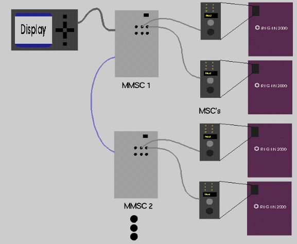

The Origin2000 Multi-Module System Controller (MMSC) provides the main system control and console interface on an Origin2000 system composed of two or more modules. Consequently, it is not unreasonable to expect that the MMSC should provide at least a small measure of protection against unauthorized access. This page documents the security features that are present in the MMSC, as well as potential security holes.
First, a brief overview of the way system controllers are set up on multi-module Origin2000 systems.
A single module always has a Module System Controller (MSC) which is used for the normal system controller functions like reset, power, NMI, etc. Each MSC has a physical keyswitch which enables "dangerous" commands such as power down or reset. If the keyswitch is in the "disable dangerous commands" position, one can still issue dangerous commands over a console connection by providing a password. Every MSC has a password; by default, it is "none".
If a system has two or more modules, then each rack of two modules will have a Multi-Module System Controller (MMSC) attached to the two MSCs. In a system with two or more racks, each rack will have its own MMSC and the MMSC's will all be linked together over a private network. Exactly one MMSC in the entire complex will have an LCD display with six buttons. A user can issue commands to the MMSC(s) either from the display or from a terminal attached to one of the MMSCs.
The purpose of the MMSC is to provide a single point of control for a multi-module system. Thus, rather than having to issue (for example) a "power on" command to each MSC, one can issue it once to the MMSC and the MMSC will send the command to each of the MSCs. To a user, the MMSC is equivalent to the "sysctlr" port on Challenge systems. However, an MMSC's only point of attachment to the rest of the system is through the MSC's - it cannot do anything to a particular module that the module's MSC can't do.
Like the MSC, the MMSC restricts access to certain commands that could potentially disrupt the system. The available commands are determined by the authority level of the user. Each authority level other than basic may have a password associated with it.
In the basic authority level, the user is allowed to display information and manipulate the console characteristics (for example, change certain control character settings), but commands that affect actual system operation will not be allowed. When a user with basic authority issues commands to an MSC, each command will be preceded by the MSC command "pas", which will revoke any supervisor/diagnostic mode password that the MSC may have.
In the supervisor authority level, commands that affect the system itself (for example, reset or power commands) are permitted. When a user with supervisor authority issues commands to an MSC, each command will be preceded by the MSC command "pas pw", where pw is the MSC password. This will allow the user to issue restricted MSC commands even if the MSC's keyswitch is not currently in the diagnostic position. These commands will be followed by the MSC command "pas" to revoke the password.
In the service authority level, commands that affect the operation of the MMSC itself are permitted. This would include commands to reconfigure the MMSC serial ports, and to change the various passwords. The service authority level is a superset of the supervisor authority level.
There are separate authority levels associated with the main terminal, the alternate console, and the MMSC display. Thus, the display may be authorized to reset the system while the main terminal is not, for example. The authority command can be used to change the current authority level associated with a user on a console. The display's authority level is changed with the "Configure|Authority" menu item. Each user's current authority level is retained in NVRAM and is restored after the MMSC has been reset. The default authority level for each user is service.
There is one password associated with each authority level (other than basic) on each MMSC. To change to a higher authority level on a console, it is necessary to specify the appropriate password along with the authority command. No password is required to switch to a lower authority level. The password command can be used to change the current password associated with an authority level.
Notice that no password is required to change authority levels on the display at this time. Because someone who has access to the display also has access to the cables and circuit breakers, this was considered to be a relatively low-grade risk. However, the ability to require a password for changing the display's authority level is still planned for a future release of the MMSC firmware.
The current authority level is valid on all MMSC's in a system, even if the other MMSC's have different passwords for that authority level. Therefore, unless the terminal, alternate console and display are physically separate and secure, and attached to different MMSC's, there is little advantage in using different passwords for the same authority level on different MMSC's.
An MMSC's passwords, as well as its internal copies of the MSC passwords, are stored in NVRAM on the MMSC itself. If the system adminstrator puts the system into a low authority level and then subsequently forgets the appropriate passwords, the system could effectively be rendered unusable. Therefore, the MMSC has a procedure for clearing out its NVRAM in order to recover from such emergencies.
Unless the system administrator is very agile, the procedure requires two people. One person must go to the back of the rack containing the MMSC with the display and cut the power to the MMSC (most conveniently by unplugging it from its power supply -- it is not necessary to cut power to the entire rack). The second person stands at the MMSC display and holds down the LEFT and RIGHT buttons. The first person then restores power to the MMSC. Once the MMSC has booted far enough to be able to read the display buttons, it will clear the contents of its NVRAM and print an appropriate message on its display. The MMSC then resumes booting in the normal fashion.
Once the MMSC has finished booting, the passwords will have been cleared, and the system administrator can set them to new values. If necessary, the passwords on the other MMSC can be set as well. It will also be necessary to restore any other settings that may have been stored in NVRAM, such as serial port speeds, rack IDs, and the various MSC passwords.
Note that clearing an MMSC's NVRAM also clears its copies of the MSC passwords, thus making it incapable of issuing destructive commands to the MSC (assuming the MSC has a non-default password in the first place). On a carefully secured system (i.e. one on which non-default passwords have been set everywhere), this will render the MMSC effectively useless: a user would be able to reconfigure the MMSC, but would not be able to do issue destructive commands to the actual modules. Thus, the ability to clear an MMSC's passwords should not constitute an especially severe security risk.